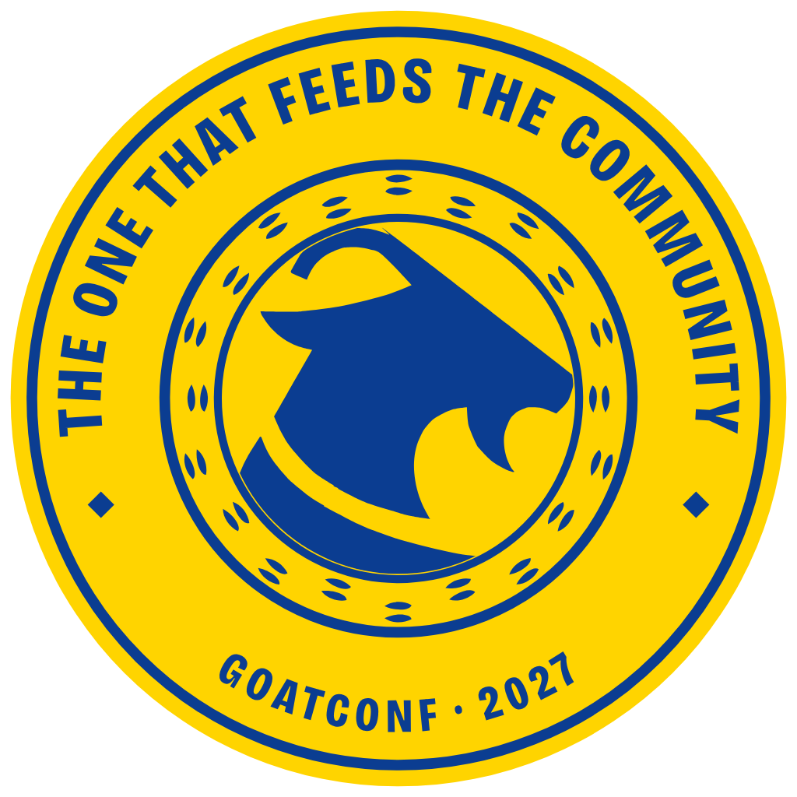
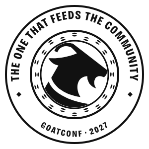
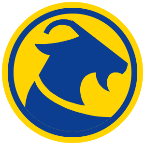
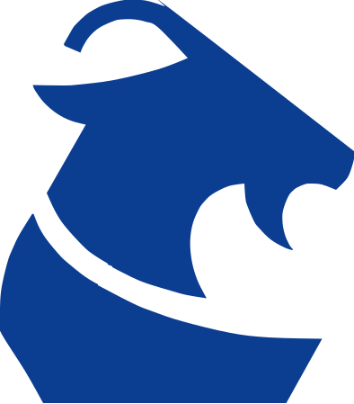

The brand
The seal, the goat and the colours, with files for posts, slides, badges and T-shirts.
The seal
During the Austro-Hungarian rule, Tuzla was ordered to get rid of its goats. One man hid his, and in time that one goat fed the whole town. GoatConf takes that goat as its mark: the one that feeds the community.
The goat is the one from EuRuKo 2024, the first Ruby conference in Bosnia and Herzegovina, where it was the mascot and on the T-shirts. The band of hoof prints around it is the community that comes to it.

The seal: SVG, PNG, PDF for print 
On blue: SVG, PNG 
One colour, for stamps and print: SVG 
The small form, for profile pictures and icons: SVG, PNG 
The small form on yellow: SVG, PNG 
The goat alone: SVG


The lockups


Colours
- Blue #0B3D91
- Goat yellow #FFD400
- Night blue #051D47
- White #FFFFFF
The seal is blue on yellow, or yellow on blue. In one colour it can be any of these, or black.
Type
Headlines and the wordmark are set in Bricolage Grotesque, extra bold and condensed. Text is set in Atkinson Hyperlegible Next. Both are free under the SIL Open Font License, and the site serves them from its own fonts folder.
Stickers
The goat in its roles, the seal and a few words, as stickers for chats, slides and laptops, with a sheet to print: see the stickers.
Using it
- Keep the seal whole and round. Do not stretch it, recolour parts of it, or put text over it.
- Leave space around it, at least the width of the hoof-print band.
- Below about 64 pixels, use the small form: the ring text cannot be read that small.
- Hosts of events around GoatConf may use the seal next to their own name, as long as the listing says the event is run independently (see the charter).